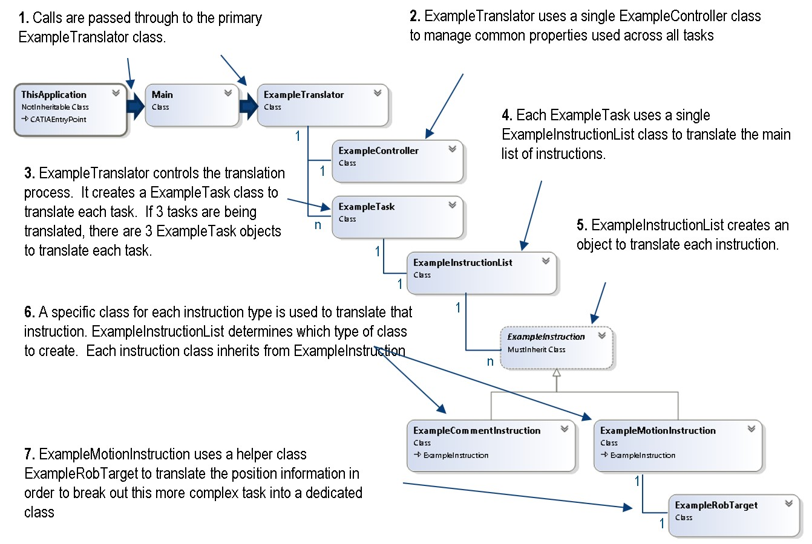

Structure of a Translator |

Most 3DExperience translators are VB.NET programs with associated C++ code. The C++ code is built into 3DExperience, so this documentation will use the DELMIA Example Translator for reference as it is entirely built in VB.NET. When a translator is opened for editing, there are a few parts available at the base level. ThisApplication.vb includes methods for initiating the translator as an object and launching the appropriate step of translation. Main.vb includes the methods used to initialize and launch the Upload, Download, Parse, and Debug processes. Each of these methods also launches error handling and collects any messages from error handling. These two files sit at the main level of the translator and will call the classes in the Translator directory as the process runs. Some translators additionally have a TranslatorUtils.vb class at this level; this class contains common conversions and utilities used in that translator.
The classes in the Translator directory handle specific functions during the translation process. TranslatorFactory handles generation of new instances of these classes, and should have an entry for any new class added. The [language]Translator.vb file contains the class that Main will call to start Upload or Download for each specific translator. [Language]Keyword.vb contains a series of strings the other functions will use to find relevant items in the incoming program. The Translating Instructions page (link) contains information on how the other files in this directory are used.
To add more instruction types to the Example Translator, create new classes that inherit from ExampleInstruction.vb and add a method to TranslatorFactory.vb to construct them, then add the appropriate conditions for these instructions to ExampleInstructionList.vb. Most instructions will also need keywords for these instructions added to ExampleKeywords.vb to allow identification of the instruction in the text file and consistency in download to a text file.